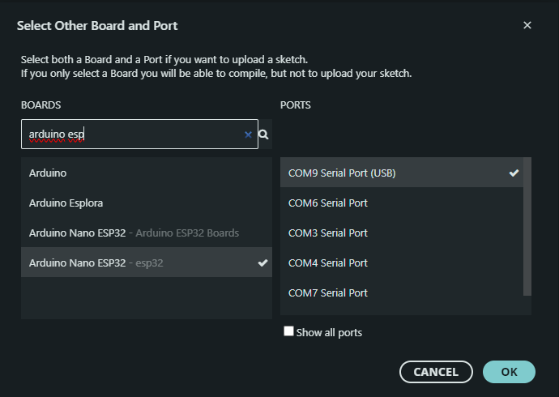

Programmierung
Für die Programmierung des Gadgets wird die "Arduino IDE" benötigt. Diese kann hier heruntergeladen werden und muss anschließend installiert werden.
Das Programm kann hier heruntergeladen werden:
Wordclock Code ZIP File
Zunächst muss die ZIP File entpackt werden. Am Besten man entpackt den Ordner auf dem Desktop. Danach kann die ".ino" Datei aus dem Ordner mit Doppelklick gestartet werden. Wenn sich die Arduino IDE geöffnet hat wird abgefragt, ob ein Ordner für diese ".ino" File angelegt werden soll. Dies kann bestätigt werden. In diesen neuen Ordner müssen nun noch die restlichen Dateien aus der entpackten ZIP File abgelegt werden. Es handelt sich dabei um ".h" und ".cpp" Dateien, die benötigt werden, damit unser Code auch funktioniert.
Anpassung des Ortes für die Außentemperatur
Um die Außentemperatur aus dem Internet abrufen zu können, muss sich zunächst auf einer Website registriert werden. Diese ist unter folgendem Link zu finden:
Weather API - OpenWeatherMap
Über „sign in“ oben rechts und anschließend über „create an account“ sollte sich folgende Seite geöffnet haben.
Hier muss nun ein Account erstellt werden.
Nach dem Einloggen kann über den Username, der nun anstelle von Login in der oberen Zeile steht, „My API keys“ ausgewählt werden. Den API Key sollte aufgeschrieben werden, da er später beim Konfigurieren der Wordclock benötigt wird.
Libraries
Nun müssen noch einige Libraries installiert werden. Dafür muss in der linken Seitenleiste das Büchersymbol ausgewählt werden. Es sollte sich nun der Library Manager öffnen. Insgesamt müssen fünf Libraries installiert werden. Achten Sie darauf, dass Sie die Version laden, welche auf den Bildern zu erkennen ist


Code hochladen
Ist dies erledigt muss nun der Code auf den Arduino hochgeladen werden. Hierfür muss zunächst die korrekte ESp32 Core installiert werden. Über Werkzeuge > Board > Boardverwalter kann nun in der Suchleiste „esp32“ eingetragen werden. Bei „esp32 by Espressif Systemsder“ muss die Version 2.0.14 ausgewählt und installiert werden.
Nun kann der Arduino über den USB-C-Anschluss mit dem Laptop verbunden werden. Anschließend muss nun der richtige Port und das richtige Board eingestellt werden. In der Arduino Software kann dies in der oberen Leiste unter „select Board“ und anschließend unter „Select other board und port“ eingestellt werden.

Wie in dem Bild zu sehen ist, muss in der Suchleiste nach „Arduino Nano ESP32“ gesucht werden. Hierbei ist es wichtig darauf zu achten, dass das Board „Arduino Nano ESP32-esp32“ ausgewählt wird. Unter Ports wird einfach der angezeigte Port ausgewählt. Nun kann der Code über den Pfeil auf türkisem Hintergrund hochgeladen werden. Das kann eine Weile dauern, da die ArduinoIDE den Code zunächst auf Fehler untersucht und dann in eine für den ESP verständliche Sprache übersetzt. Diesen Vorgang nennt man "Kompilierung".